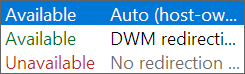
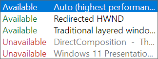
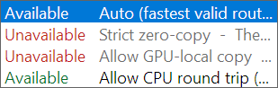
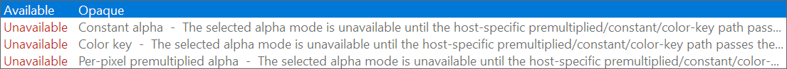
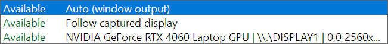
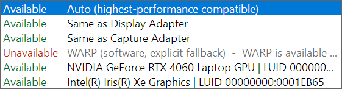

MAG Screen Magnifier Help › Presentation and Composition
Presentation and Composition
These controls describe how completed content reaches the Desktop Window Manager and
display. They are validated together; selecting an API name does not guarantee that
Windows can use that model for the current renderer, host, adapter, and window state.
Start on Auto. Exact choices are contracts, not hints: MAG rejects an unavailable target, incompatible surface/host, forbidden copy class, or unavailable adapter instead of silently weakening the request.
Presentation controls in MAG
 Target: Auto plus legacy flip/copy, independent flip, composed flip, hardware-composed independent flip, and GPU/CPU GDI copy models. |
 Surface: host-owned Auto, DWM redirection, or no redirection. |
 Host: Auto, Redirected HWND, Traditional layered window, DirectComposition, or Windows 11 Presentation Manager. |
 Copy policy: fastest valid, strict zero-copy, GPU-local copy, or diagnostic CPU round trip. |
 Alpha: opaque, constant, color key, or per-pixel premultiplied. |
 Display adapter: window output, captured display, or a named output/monitor. |
 Hardware adapter: highest-performance compatible, match display/capture, WARP, or an explicit adapter/LUID. |
 Resolved result: the Route DAG and status identify the active compositor-visual path immediately. |
Presentation target
| Target | Description |
|---|
| Auto (highest performance) | Selects the fastest target implemented by the active graphics/host route. |
| Hardware: Legacy Flip | Requests the legacy hardware flip path used by compatible presenters such as WGL. |
| Hardware: Legacy Copy to front buffer | Requests the legacy front-buffer copy presentation model where the backend exposes it. |
| Hardware: Independent Flip | Requests direct independent-flip eligibility. Actual promotion remains under Windows/DWM control. |
| Composed: Flip | Uses flip-model presentation while DWM composes the result. |
| Hardware Composed: Independent Flip | Requests the hardware-composed independent-flip model supported by compatible DXGI/Presentation Manager routes. |
| Composed: Copy with GPU GDI | Requests the composed GPU-assisted GDI copy model where supported. |
| Composed: Copy with CPU GDI | Uses the CPU/GDI composed-copy model, including traditional layered presentation. |
Observed mode: Windows can decline a requested hardware mode because of
occlusion, scaling, overlays, topology, driver capability, or window state. With
Require exact target enabled, an observed mismatch marks the route unsupported.
Configured presenter, eligible plane, and observed result
A swap effect is an application configuration. DirectFlip, Independent Flip, and MPO are
decisions Windows can make later for an eligible submitted frame. MAG keeps the following
states separate so an available capability is never presented as proof that the frame is
currently scanning out on that plane.
| State | What it means |
|---|
| Requested | The Target selected in Settings, or Auto. |
| Configured | The presenter/host MAG actually created, including swap effect, buffers, pacing, format, alpha, surface ownership, and adapter. |
| Eligible | The selected output and current geometry satisfy the reported DirectFlip, panel-fitter, Independent Flip, MPO, displayable-surface, opacity, and adapter prerequisites. |
| Observed | Windows reported the exact result for a MAG frame through Presentation Manager statistics or the process-scoped ETW observer. |
DirectFlip is a transition/prerequisite, not a separate exact PresentMon label. A generic or
missing statistic is never converted to Independent Flip. If the ETW session cannot start,
the status reports the Windows error and continues to describe only configuration and
eligibility; it does not claim that a hardware plane is active.
Display-plane status
| Reported value | How MAG uses it |
|---|
| DirectFlip and geometry | Shows driver support and whether the current client covers the selected output. Full-output coverage is one DirectFlip route; it is not the only possible MPO route. |
| Panel fitter | Reports hardware scaling eligibility when a full-output client uses a differently sized buffer. The cursor-stretch warning is shown separately. |
| Independent Flip | Reports primary and secondary-display capability. Windows can still return to composition because of occlusion, overlays, alpha, scaling, topology, or another desktop change. |
| MPO planes | Shows the selected VidPN source's current total, RGB, and YUV plane counts plus decode, secondary-display, stretch, HUD, kernel, and MPO3 support. |
| MPO features | Shows rotation, vertical/horizontal flip, RGB/YUV stretching, bilinear/high filtering, shared-plane, immediate-flip, and plane-0 virtual-mode flags returned by the display stack. |
| Scaling limits | Shows MPO and post-composition shrink/stretch limits. A zero is displayed only when the driver reported zero; a failed query is labeled not reported. |
| Displayable / hardware flip queue | Shows WDDM 3 displayable-allocation support and the hardware flip queue support/enabled state used by the highest-performance Presentation Manager route. |
| Cross-adapter tier | Reports none, copy, texture, or scanout capability. This is diagnostic eligibility only; MAG does not call a route zero-copy until the actual shared resource and synchronization path is active. |
| Scanout and cursor caps | Preserves the raw scanout capability word and names documented cursor/MPO restrictions, including plane-0 cursor scaling and unavailable XOR blending. |
Plane counts are properties of the selected output configuration, not just the GPU model.
Monitor topology, HDR/SDR format, bit depth, GPU scaling, and driver state can change them.
MAG therefore refreshes the capability catalog when the display route is rebuilt.
Swap-chain rules used by MAG
- Flip discard is preferred for complete-frame modern presentation. Flip sequential is reserved for a route that genuinely preserves and consumes prior regions.
- Flip chains use at least two single-sampled buffers. Multisampling, if added, must resolve into a non-MSAA presentable buffer.
- Only one flip-model chain owns an HWND/composition target. Mixed GDI/DXGI drawing belongs to an explicit BitBlt host.
- Buffer count, maximum latency, sync interval, tearing, and waitability are treated as one pacing contract. Waitability is not assumed to be faster after DirectFlip eligibility is lost.
- During resize, the newest complete frame for the committed geometry wins. Older ready frames are dropped rather than shown late.
Waitable swap-chain policy
| Choice | What MAG configures |
|---|
| Auto | Enables the DXGI frame-latency wait object only for a D3D11/D3D12 flip route that is currently Independent-Flip or MPO eligible. It disables the object for composed-only, BitBlt, non-DXGI, and Presentation Manager routes. |
| Enabled | Creates a compatible D3D11/D3D12 flip chain with DXGI_SWAP_CHAIN_FLAG_FRAME_LATENCY_WAITABLE_OBJECT, applies the maximum-latency slider to the chain, and exposes its wait handle to MAG's frame loop. |
| Disabled | Creates the flip chain without the waitable flag. D3D11 applies its device-level maximum latency; D3D12 leaves queue latency driver-managed and labels the slider value as a request. |
Presentation Manager is not a DXGI waitable-chain mode. It owns a separate buffer-available event, retirement fences, and presentation-statistics path. Switching the waitable flag recreates the one permitted HWND flip chain transactionally; a failed replacement restores the previous working chain.
Surface ownership
| Choice | Description |
|---|
| Auto (host-owned) | Uses no-redirection for DirectComposition/Presentation Manager and DWM redirection for redirected/layered hosts. |
| DWM redirection surface | DWM owns the conventional redirected HWND surface. |
| No redirection surface | Sets the no-redirection ownership model. Visible content must be supplied by DirectComposition or Presentation Manager. |
Composition host
| Host | Description |
|---|
| Auto (highest performance) | Selects a host from the requested target, capture route, renderer, API availability, and desktop state. |
| Redirected HWND | Uses normal HWND/DWM redirection and the graphics backend's window presenter. |
| Traditional layered window | Uses the User32 layered-window bitmap contract. This is a CPU round-trip route and is incompatible with compositor-owned DWM visual capture. |
| DirectComposition | Attaches visual content to a DirectComposition target. No-redirection is supported when all visible content is attached. |
| Windows 11 Presentation Manager | Uses Presentation Manager when its runtime entry points and a compatible native frame route are available. |
Copy policy
| Policy | Accepted routes |
|---|
| Auto (fastest valid route) | Chooses the highest-performing route that satisfies the other explicit settings. |
| Strict zero-copy | Accepts only a proven true zero-copy route or compositor-visual pass-through. CPU map/upload paths are rejected. |
| Allow GPU-local copy | Allows native GPU-local copies but rejects CPU-owned and CPU round-trip routes. |
| Allow CPU round trip (diagnostic) | Allows all implemented routes, including CPU capture/readback/upload. Use this for compatibility testing rather than maximum performance. |
Alpha and layering
| Mode | Requirements |
|---|
| Opaque | Default, highest-compatibility output. |
| Constant alpha | Uses the 0–255 constant-alpha value on a layered or composition host. |
| Color key | Uses the RRGGBB key on a compatible host. DirectComposition/Presentation Manager require a renderer key-to-alpha pass and reject this mode when that pass is unavailable. |
| Per-pixel premultiplied alpha | Requires a layered or composition host and premultiplied BGRA content. |
Adapter selection
| Control | Choices |
|---|
| Display adapter | Auto (window output), Follow captured display, or an explicit output showing adapter, device name, desktop coordinates, refresh rate, and HDR status. |
| Hardware adapter | Auto (highest-performance compatible), Same as Display Adapter, Same as Capture Adapter, WARP (software, explicit fallback), or an explicit physical adapter/LUID. |
Strict zero-copy is rejected when Hardware Adapter and Display Adapter differ unless a
validated cross-adapter zero-copy route exists. Disconnected, software-only, or missing
explicit adapters are also rejected. WARP is an explicit software fallback and is limited
to the routes named by the status box.
Important compatibility rules
- No-redirection requires DirectComposition or Presentation Manager content.
- Traditional layered windows require their User32 layered surface and cannot host DWM Thumbnail or DWM Private Visual capture.
- Presentation Manager requires supported Windows 11 runtime entry points and a compatible D3D11, D3D12, or explicit GDI bridge.
- Non-Direct3D renderers generally use redirected HWND or traditional layered hosts unless a compositor-owned capture route supplies the visual directly.
- Tearing requires sync interval 0 plus API, driver, and window support.
- The status area explains the first rule that rejects an inspected combination while the last valid route remains active.
Build an exact route
Choose Graphics and Capture first; leave the remaining presentation fields on Auto and confirm the baseline passes.
Select the required Target and enable Require exact target when a fallback presentation model is unacceptable.
Choose the Surface and Host as a pair: redirected HWND, layered bitmap, DirectComposition no-redirection content, or Presentation Manager.
Tighten Copy policy. Strict zero-copy accepts true zero-copy or compositor-visual pass-through, never a CPU map/readback/upload route.
Choose Display and Hardware adapters. Prefer matching ownership unless the selected route explicitly validates a cross-adapter transfer.
Set alpha, buffer count, maximum latency, sync interval, waitable policy, and tearing. Each compatible change activates immediately; an unavailable request leaves the prior route active.
Architecture and background
See Windows Graphics Architecture for DXGI,
DirectComposition, DWM/redirection/no-redirection, WDDM/driver, and renderer stack diagrams.
The architecture topic also documents the three Microsoft layering articles and the
presentation-model reference
plus SwapChain Science, which MAG
uses for the swap-effect/presentation-outcome distinction and flip-model compatibility rules.